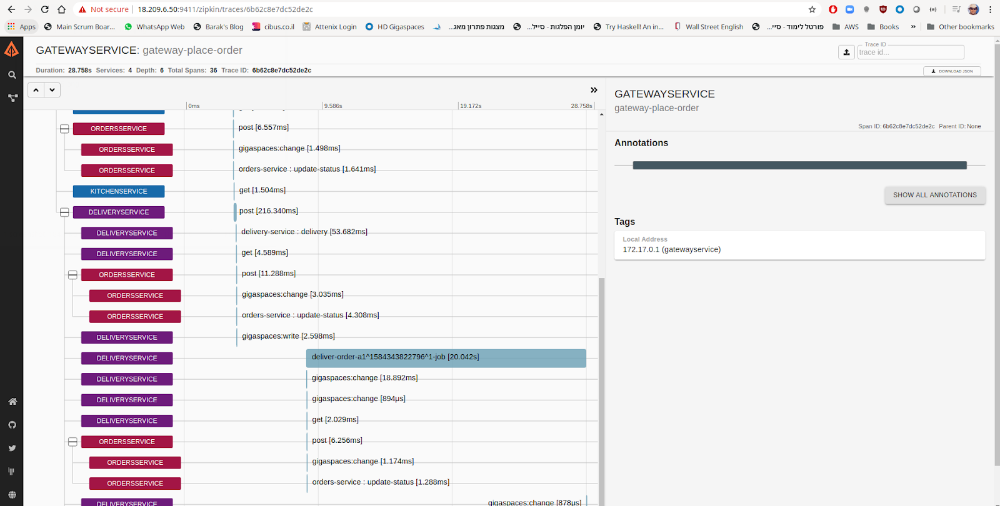

This topic describes how to leverage Distributed Tracing in your GigaSpaces cluster to identify latency issues.
Distributed tracing is quickly becoming a must-have component in the tools that organizations use to monitor their complex, microservice-based architectures. This helps engineers to pinpoint errors and identify performance bottlenecks.
GigaSpaces monitoring, part of the
For more information, view
GigaSpaces allows its users to trace their code by using
In order to turn tracing on, you must configure a Tracer and register it with the GlobalTracer.registerIfAbsentGlobalOpenTelemetry.getTracer
Every synchronous method in the GigaSpaces API will add a span to the active span if it exists. When the span is finished it is reported to the tracing endpoint (e.g. Zipkin).
readMultiple method that adds a new span to the lifecycle of the flow:
// define Tracer and GigaSpaces proxy
GlobalTracer.registerIfAbsent(tracer);
io.opentracing.Span span = tracer.buildSpan("FirstSpan").start();
gigaSpaces.readMultiple(new Person());
span.finish();
@Autowired
GigaSpace gigaSpace;
Tracer tracer = GlobalOpenTelemetry.getTracer("com.myapp");
Span span = tracer.spanBuilder("process-order").startSpan();
try (Scope scope = span.makeCurrent()) {
// All GigaSpace calls inside this scope are automatically traced
Order order = gigaSpace.readById(Order.class, orderId);
order.setStatus(OrderStatus.PROCESSED);
gigaSpace.write(order);
} catch (Exception e) {
span.setStatus(StatusCode.ERROR, e.toString());
span.recordException(e);
throw e;
} finally {
span.end();
}
GigaSpaces provides a built-in bean com.gigaspaces.tracing.ZipkinTracerBean that can be used to send the traces to Zipkin as the tracing endpoint. This bean will register a GlobalTracer that can be used by the user's code. Same GlobalTracer will be used in the GigaSpaces proxy for the synchronous methods.
@Bean
public ZipkinTracerBean tracerBean() {
return new ZipkinTracerBean("GatewayService")
.setZipkinUrl("http://zipkin.company.com")
.setStartActive(true);
}
Spring bean (recommended):
<bean id="zipkinTracer" class="com.gigaspaces.tracing.ZipkinTracerBean"
init-method="start" destroy-method="destroy">
<!-- Required: logical name that identifies this service in Zipkin UI -->
<constructor-arg value="my-service"/>
<!-- Optional: Zipkin base URL. Default: http://zipkin.service.consul:9411 -->
<property name="zipkinUrl" value="http://zipkin-host:9411"/>
<!-- Set to true to export spans (false = noop, no network traffic) -->
<property name="startActive" value="true"/>
</bean>
This bean is part of the xap-reporter module. To use it you need to add it to your processing unit jar file with its dependencies.
<dependency>
<groupId>org.gigaspaces</groupId>
<artifactId>xap-reporter</artifactId>
<version>15.2.0 17.2.0 </version>
</dependency>
The screenshot below shows a "trace" of data sampled by Zipkin of multiple microservices running on a GigaSpaces distributed cluster:

One of the built-in services that are provided in ElasticGrid is Zipkin service. In addition, if the above ZipkinTracerBean is configured, it will automatically detect that it is running in ElasticGrid and therefore will allow you to turn the global tracing on and off by monitoring Consul for the key "gigaspaces/tracing".